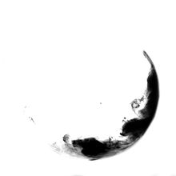
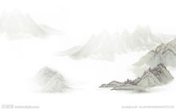

[liú bái]
留白（汉语词汇）编辑
留白是中国艺术作品创作中常用的一种手法，极具中国美学特征。留白一词指书画艺术创作中为使整个作品画面、章法更为协调精美而有意留下相应的空白，留有想像的空间。
中文名 留白
外文名 eave a note;leave a blank;blank
目录
- 概述
- 基本信息
- 详细解释
- 概述
- 艺术角度上说，留白就是以“空白”为载体进而渲染出美的意境的艺术
- 应用角度上说，留白更多指一种简单、安闲的理念
- 留白主要分为：词语留白、艺术留白、哲学留白、应用留白
- 基本信息
- 【词目】 留白
- 【拼音】liú bái
- 【英译】[leave a note;leave a blank;blank]
- 【基本解释】
- 比如画画,画画需要留白.艺术大师往往都是留白的大师，方寸之地亦显天地之宽。南宋马远的《寒江独钓图》，只见一幅画中，一只小舟，一个渔翁在垂钓，整幅画中没有一丝水，而让人感到烟波浩渺，满幅皆水。予人以想象之余地,如此以无胜有的留白艺术，具有很高的审美价值，正所谓“此处无物胜有物”。
详细解释
- 词语留白
- 1.意思是留言。 郭沫若《北伐途次》八：“车站外面的壁上四处都是用粉笔写的留白，是某某团部、某某营部或某某政治部叫所属的人员在某处集合或者前进。”
- 2.谓食薤留下藠头。白，指薤的根部，即藠头，味美。《晋书·庾亮传》：“ 亮 噉薤，因留白， 侃 问曰：‘安用此为？’ 亮 云：‘故可以种。’ 侃 於是尤相称叹云：‘非惟风流，兼有为政之实。’”[1]
- 艺术留白
- “留白”，是我国传统艺术的重要表现手法之一，被广泛用于研究中国绘画、陶瓷、诗词等领域中。留白就是在作品中留下相应的空白，在文学作品、绘画和话剧上都有留白。

- 1.文学，音乐上亦多有“不着一字，而形神俱备”、“无声胜有声”的留白。
- 2.绘画，国画中常用一些空白来表现画面中需要的水、云雾、风等景象，这种技法比直接用颜色来渲染表达更含蓄内敛。后来此技法渐渐被用到了其它绘画中，意即我们所说的留白。留白可以使画面构图协调，减少构图太满给人的压抑感。很自然地引导读者把目光引向主体。
- 绘画需要留白，艺术大师往往都是留白的大师，方寸之地亦显天地之宽。南宋马远的《寒江独钓图》，只见一幅画中，一只小舟，一个渔翁在垂钓，整幅画中没有一丝水，而让人感到烟波浩渺，满幅皆水。予人以想象之余地,如此以无胜有的留白艺术，具有很高的审美价值，正所谓“此处无物胜有物”。[2]
- 3.书法，书法讲究“疏密”。疏，就是简练，就是留白。字的结构和通篇的布局一定要有疏密，才能破平板、划一，有起伏、对比，既矛盾又和谐，从而获得良好的艺术情趣。凡作书法，既要注意黑的部分——字形笔画的密处，也要注意到字画间及行间之白的疏处。黑处要精心结撰，而白处——字里行间的布置也须措置得宜，使疏密有致，两者相映生辉。[3]
- 4.话剧，话剧用语指的是在话剧中演员说完一些艰涩的台词之后，为了方便观众有时间理解台词，稍微停顿一些，再接下去表演。

参考资料
- 词语“留白”的解释．汉典[引用日期2013-03-18]
- “留白”的艺术．凤凰网[引用日期2013-03-18]
- 书法要留白：虚实相生，密不透风疏可走马．优米网[引用日期2013-03-18]